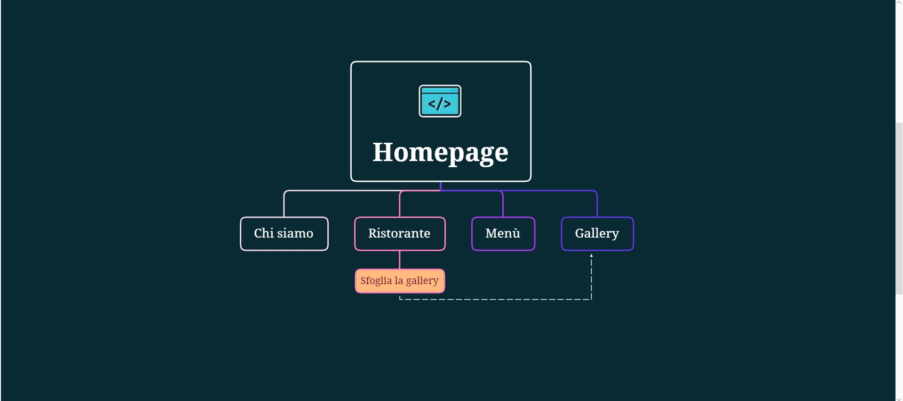
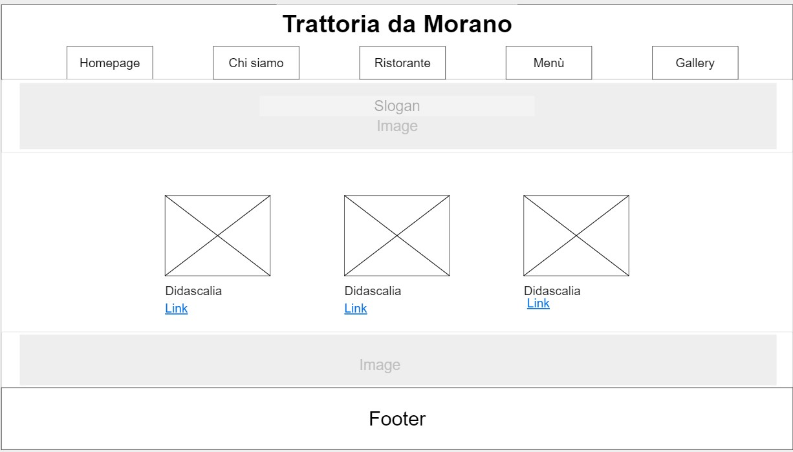
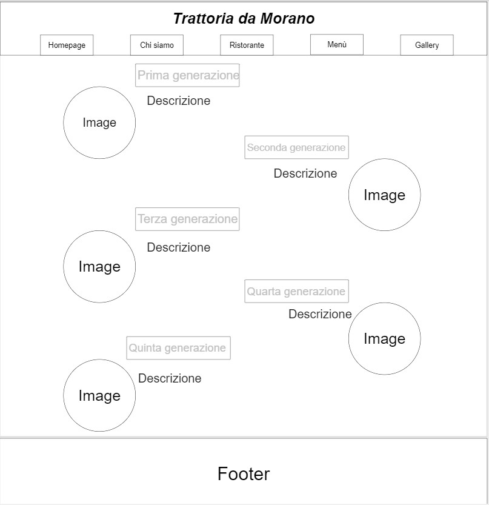
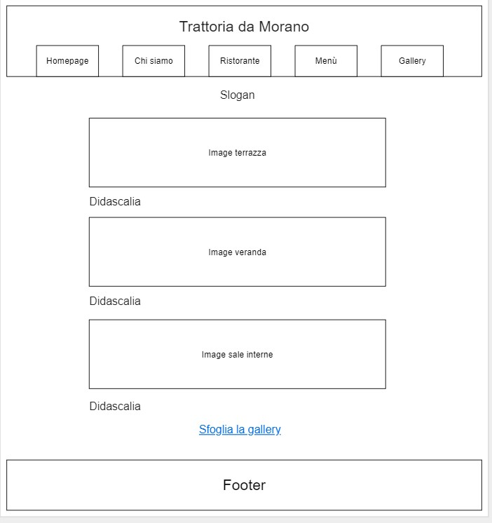
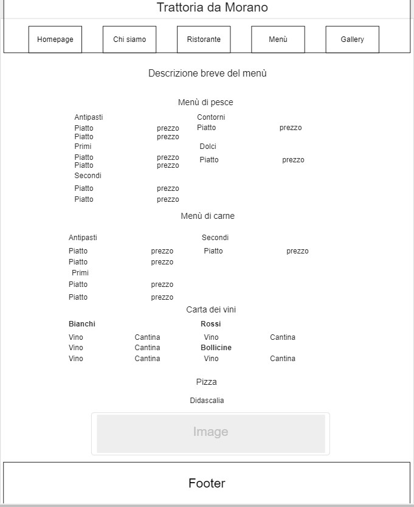
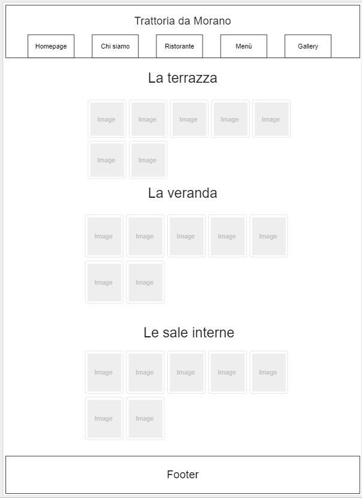

Abstract
Sponsorizzare il ristorante e il territorio per creare un legame con il cliente duraturo e stabile. Il locale lavora soprattutto durante la stagione estiva perché molto frequentato da turisti italiani e stranieri. Foto di qualità che rappresentano con fedeltà il locale e uno storytelling che consente di conoscere meglio il ristorante e i suoi gestori sono uno strumento capace di avvicinare sentimentalmente le persone al ristorante e a chi lo gestisce proponendo in questo modo oltre all’esperienza culinaria anche quella umana.
Project Management Plan
Benchmarking
Obiettivi
Sponsorizzare il locale e il territorio della Tuscia
Aumentare la visibilità online del locale poichè non iscritto a social quali Facebook e Instagram
Fidelizzare il cliente
Target utente
Turisti italiani e stranieri
Competitors
Parametri valutati
##Likert scale:1-5##
- Menù
- Foto piatti e location
- Contatti
- Storytellin
- Web design
- Multilinguismo
##Un punto per ogni lingua usata##
Ristorante Isola Blu
Casa Iozzia
Menù
- Voto: 4
-
Note:
- Foto dei piatti assenti
- Presente il menù nella sua interezza e con i prezzi
- Nomi tipici del territorio siciliano
- Volontà di portare la Sicilia nella Tuscia (vedi il piatto dal nome “L’Astice del cimino”)
Foto piatti e location
- Voto: 4
-
Note:
- Foto tanto belle quanto anonime, in questo caso presente solo una foto del proprietario. Discorso diverso per la location: foto ben fatte e suggestive
Contatti
- Voto: 4
-
Note:
- Pagina contatti presente e con localizzazione Google
- Possibilità di scrivere via e-mail oltre che contatto telefonico
- Footer con i contatti
Storytelling
- Voto: 5
-
Note:
- Qui la storia dello chef è raccontata con precisione ma senza annoiare inutilmente l’utente con dettagli inutili o fronzoli
- Pagina interamente dedicata allo chef (Lorenzo Iozzia) e al suo percorso biografico e lavorativo
Web design
- Voto: 5
-
Note:
- Colori usati: bianco, nero, rosso e blu-celeste
- Menù ad hamburger in alto a sinistra
- Brand identity ben sviluppata, presente anche un logo personale (barca stilizzata)
- Nonostante le numerose didascalie, nonostante le varie pagine, il sito è facile da usare e non risulta dispersivo
Multilinguismo
- Voto: 1
-
Note:/
Trattoria dal Moro
Menù
- Voto: 4
-
Note:
- Menù senza prezzi e non presente nella sua interezza, ma, probabilmente, intento a mostrare solo i piatti prelibati, le sue eccellenze, quindi scelta coraggiosa ma sincera
- Foto presenti e molto ben fatte
- Descrizioni dei piatti e delle location presenti e precise, ma mai prolisse
Foto piatti e location
- Voto: 5
-
Note:
- Foto eccellenti, evidente la mano di un professionista
- Al contrario delle foto di Casa Iozzia, oltre ad essere qualitativamente ottime, esaltano sempre un aspetto caratteristico del luogo: mai anonime
Contatti
- Voto: 3
-
Note:
- Classico footer con i contatti, email e telefono, posizione google
Storytelling
- Voto: 5
-
Note:
- Intera pagina dedicata alla storia del locale e dei suoi gestori
- Ben scritta, non annoia
- Foto di famiglia molto bella e suggestiva
- Presenti anche foto d’epoca molto affascinanti
Web design
- Voto: 5
-
Note:
- Sito ben realizzato, facile da usare e graficamente ben organizzato
- Scelte precise e coraggiose (giusta l’idea di pubblicizzare solo i piatti tipici)
- Colori: Nero e bianco
Multilinguismo
- Voto:1
-
Note:/
Struttura e layout
Architettura del sito

1. Rappresentazione ad albero del sito
Wireframe

2. Wireframe Homepage. Pagina che cerca di riassumere il contenuto del sito web. Quindi abbiamo tre foto con un link che colleg l'utente alle altre pagine, raggiungibili oppure attraverso il menu orizzonatale. In cima una frase-slogan.

3. Wireframe Chi siamo. Progressione temporale in cui viene raccontata brevemente la storia delle generazioni che hanno gestito il locale: accanto la didascalia la foto del gestore.

4. Wireframe ristorante. Esplorazione degli spazi del locale, fornendo una foto e una breve descrizione. Alla fine è stato inserito un link alla pagina della gallery per stimolare l'utente a vedere anche le altre foto disponibili.In cima una frase-slogan.

5. Wireframe menù. Menù presentato nella sua interezza (ad eccezione della carta dei vini) e breve descrizione dela pizzeria per far presente al cliente la possibilità di mangiare anche la pizza. In cima breve descrizione di alcuni piatti del menù.

6. Wireframe gallery. Breve raccolta di foto di ogni locale.
Look and Feel
L'obiettivo era di costruire un template grafico minimale ed essenziale affinchè il cliente potesse orientarsi con velocità e scegliere istintitivamente.
I colori scelti sono il blu e il bianco, il primo di una tonalità molto scura per rimandare all'acqua del lago; il invece è un bianco "sporco" per evitare un contrasto eccessivo con il blu e creare un effetto "lettura su carta".
Le font scelte sono tre: Cinzel e Cinzel decorative rispettivamente per gli elementi del menù di navigazione e il nome del ristorante; Montserrat invece per il resto del testo. Pochi font dallo stile semplice per non appesantire la lettura.
Inserito un hamburger menù per rendere la navigazione mobile più scorrevole
Linguaggi e strumenti
Linguaggi
- HTML
- CSS
- Javascript
Strumenti
- W3school. Consultato per codici più complessi e informazioni aggiuntive
- Fontawsome
- Goole font
- Google analytics
- Free Fronted. Consultato per il codice del menu ad hamburger (author: Ahmad Eran) e il codice HTML e CSS per la pagina "chi siamo" (author: Alvaro Trigo)
- Mowups. Tool per la costruzione dei wireframes
- Github. Strumento usato per il servizio di hosting di repository
- Xmind. Tool per la costruzione del grafico ad albero del sito
Communication Strategy
Background
I siti web dei competitor analizzati sono ben costruiti, sia per il design sia per l'usability. Tuttavia, contengono spesso molti contenuti, molte pagine e link che, seppur bene organizzati, rendono l'esperienza dell'utene troppo lunga e complessa rispetto al necessario. Diventa necessario allora costruire un sito web essenziale, intuitivo e capace di spingere più sull'aspetto emotivo che razionale.
Obiettivi comunicativi
Obiettivi
Fornire visibilità al ristorante online poichè è sfornito di pagine social e quindi diventa meno visibile a turisti che scelgono con velocità attraverso il web. L'obiettivo quindi è di ottenere almeno 60 visite al sito da utenti unici.
Scelte comunicative
- Sponsorizzazione dei prodotti tipici del lago
- Spettacolarizzazione della location
- Consentire all’utente un user journey veloce e intuitivo
- Comunicare familiarità e semplicità (usare il termine “trattoria” anziché “ristorante”)
- Concentrarsi il più possibile sul target individuato, quindi operare scelte discriminanti verso altri potenziali utenti
Target audience e messaggio
Target principale
Caratteristiche socioculturali
- Nucleo familiare compreso tra le due e le cinque persone
- Volontà di esplorare e viaggiare
- Bisogno di ostentare le nuove esperienze fatte
- Curiosità verso ciò che non è mainstream
- Appartenente a qualsiasi nazionalità
- Fascinazione per tutto ciò che rientra nelle parole chiave "familiare", "del luogo", "tipico", "tradizionale"
- Età compresa tra i trenta e i sessantanni
- Frequentazione attiva dei social, gli piace molto fotografare, lasciare testimonianze
Caratteristiche come consumatore
- Turista di passaggio
- Poco attento alla spesa
- Non ha molto tempo a disposizione, è appena arrivato nella località scelta e già ha preso molte decisioni complesse nell'aver organizzto la vacanza
- Cerca cià che non può trovare dal luogo di provenienza
Target secondario
- Coppia marito e moglie o di giovani fidanzati che vogliono organizzare una cena romantica in riva al lago di bolsena
Possibili barriere: spesso i turisti che frequentano il locale sono tedeschi e inglesi, quindi è necessario rende fruibile il sito anche in altre lingue oltre all'italiano.
Messaggio trasmesso
- Spettacolarizzare la location grazie a foto di qualità (ingaggiati fotografi professionisti)
- Promuovere l'idea che il ristorante lavora soprattutto la materia del territorio, in particolare il pesce di lago (pubblicazione del menù nella sua interezza online con breve descrizione che mette in risalto i piatti tipici)
- Fidelizzare il cliente affinché ogni volta che torna in zona (trattandosi di un turista) ritorni con piacere nel locale
- Trasmettere la gestione familiare del locale, proponendo la storia della famiglia e delle foto d'epoca
Promozione
Attivazione account Google Business del locale, quindi rispondere alle recensioni, pubblicare nuove foto e testimoniare la presenza (attiva) online del ristorante.
Valutazione dei risultati
L'obiettivo era di raggiungere 60 visite dal giorni di pubblicazione (2 ottobre 2022) e, grazie al monitoraggio attraverso Google Analytics, è possibile affermare di aver raggiunto l'obiettivo